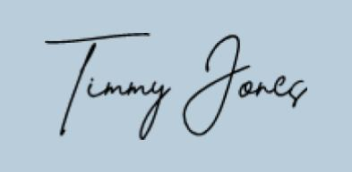

Timmy "Nemo" Jones
Common fisherman
SS Skippy
21928 Cthulu Lane, Lovecraft City 08226
The Motherland
Telephone: doesn't exist yet
Email: also doesn't exist yet
15 March 1937
Poor soul who finds this letter
Address: unknown
The Motherland
It was a cold winter’s night when my crew and I saw its 20-meter-long tentacles come crashing out of the pitch-black water. You hear ghost stories about it, but you never really understand the true horror of it until you see it with your own two eyes. Its deep red tentacles wrapped around our ship, nearly crushing it in half. It all happened so quickly, but mean and two other crew members made it to a safety raft and got out of reach of the horrid creature. Looking back we can finally see the monster in its full glory at least 50 meters in full size with eight 20-meter-long tentacles and its eys glow yellow with pure evil and a taste for human flesh, the Kraken itself had just eaten my crewmates.
Once we safely reached land, we tried to explain to people what had happened but no one believed us, who would, we sounded like bunch of madmen. SO if you find this letter and choose to believe me, never and I mean never go sailing in the Black Sea because it lurks there and it is always hungry for human flesh.
To hear more about my horrific tale, send a letter back to the return address
Yours truly,
Timmy "Nemo" Jones 
Common Fisherman of what was the SS Skippy